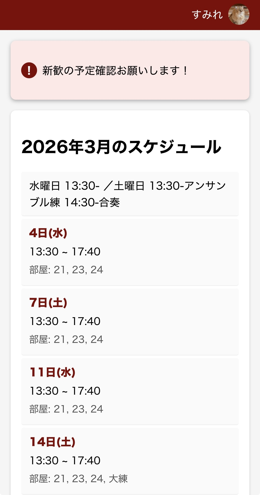
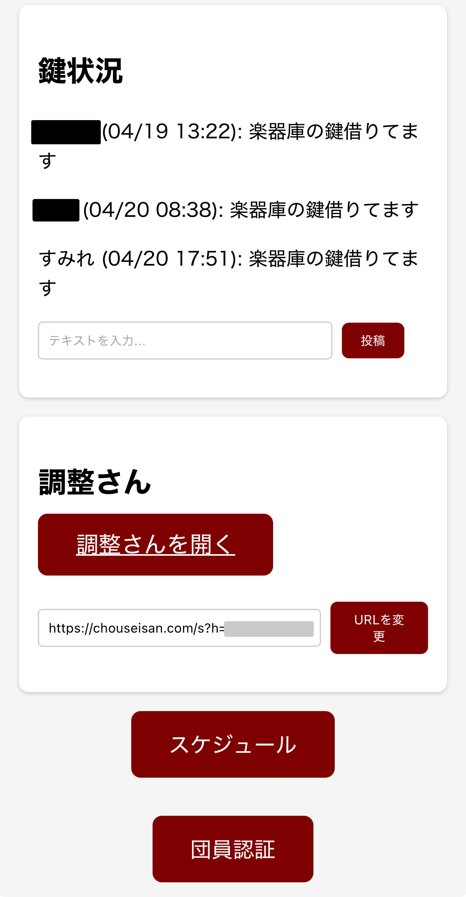
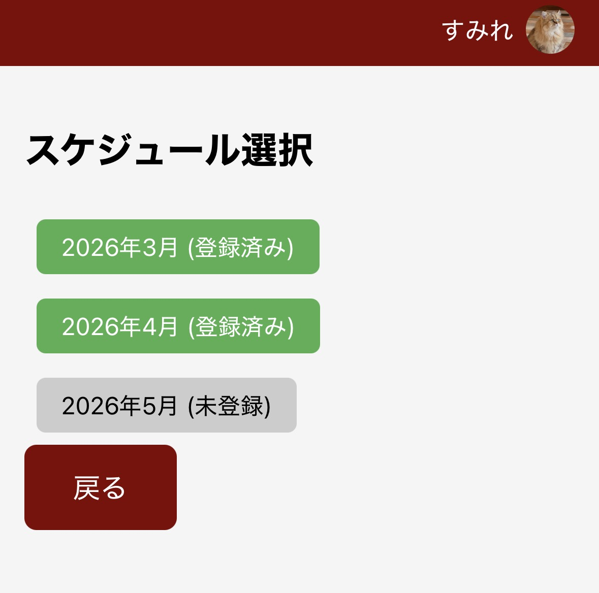
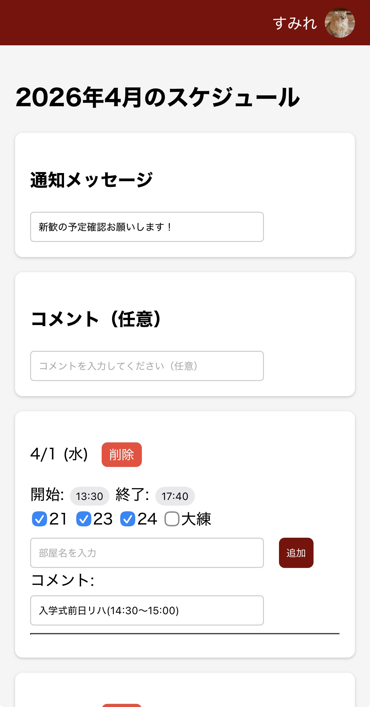
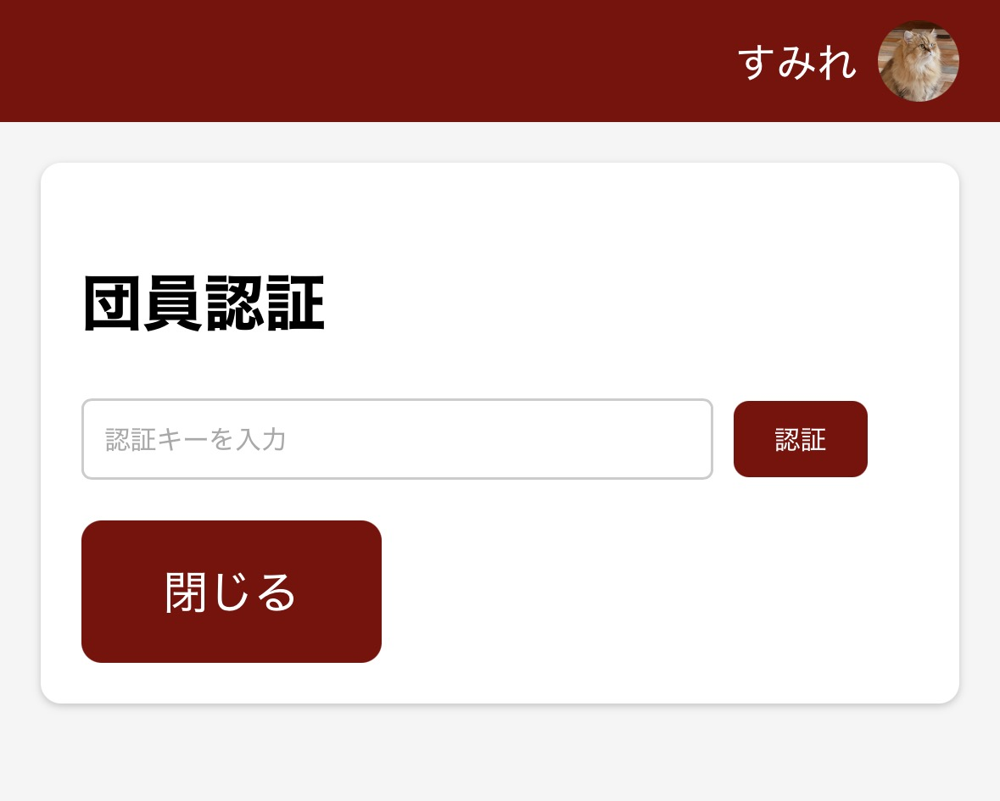
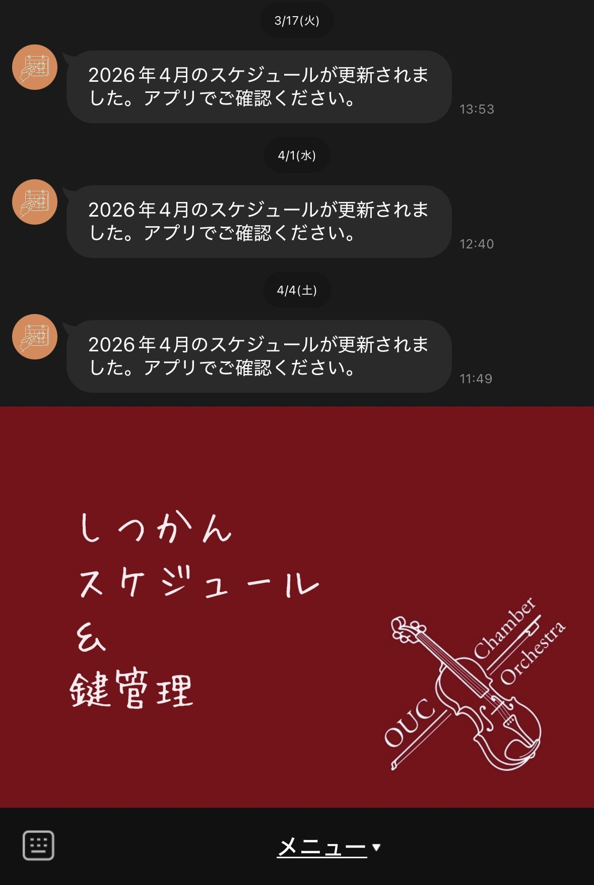

サークルスケジュール管理LINEアプリケーションの構築
概要
所属するサークルのスケジュール管理を効率化するためのLINEアプリケーションを構築しました。
技術
背景
私が所属するサークルでは、LINEグループのノート機能で、毎月スケジュールを投稿し、返信を通じてサークル会館の鍵を借りたことを報告していました。
また、調整さんというサイトを利用して、出欠確認を取っています。
従来の方法では、主にスケジュールの作成において、日付の確認や、追加の日程などがあった際に手打ちで対応する必要がありました。
そこで、スケジュール管理を効率化するためのLINEアプリケーションを構築することにしました。
主な機能
- スケジュールの作成・編集機能
- 鍵の管理コメント投稿機能
- 調整さんへ飛ぶリンクを貼る機能
スケジュール画面

通知コメント：
画面上部のコメント（「新歓の予定確認お願いします！」の箇所）
毎月重要事項があればここに記載する。
スケジュール：
日程・部屋を確認できる画面。
鍵管理・調整さんリンク

鍵状況：
鍵を借りた際にコメントを入力して投稿する箇所。投稿時間を確認して、鍵の状況を知ることができる。
調整さんリンク：
毎月練習の出欠を調整さんでとっているため、URLを入力して変更ボタンを押すことで、この画面から調整さんにすぐ飛ぶことができる。
スケジュール編集画面

スケジュール選択画面：
スケジュールボタンを押すと、上記画面に遷移する。現在の月とその前後の月の3か月分のスケジュールが登録されているかを確認でき、編集したい月を選択して編集画面に遷移する。

スケジュール編集画面：
基本の活動日程・活動する部屋が標準で入力されており、そこから変更があれば変更する。新たに日程を追加したり削除したりできる。
認証

認証画面：
LINEアプリのため、LINEアカウントでのログインが必要なことに加え、サークルメンバーにのみ配布する認証キーを入力することで、スケジュールの編集や鍵に関するコメントを投稿できるようにしている。
LINE公式アカウント

LINE公式アカウント：
公式アカウントでは、スケジュールが更新された際に通知が来るようになっている。
課題
以下のような課題が残りました。
- ホワイトリスト(認証されたユーザーリスト)に情報が無期限で残るので、OBOGになったあとも権限が残ってしまう
- 調整さんが複数になる月（定期演奏会関係など）に対応できていない
- 鍵借りました投稿が、n時間前、n日前の表示のほうがわかりやすい